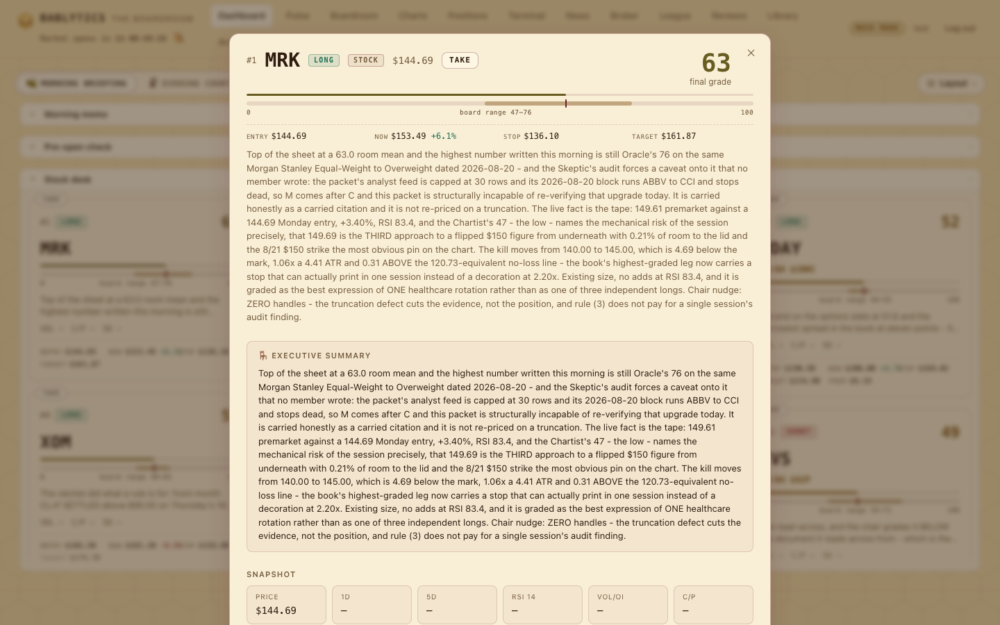
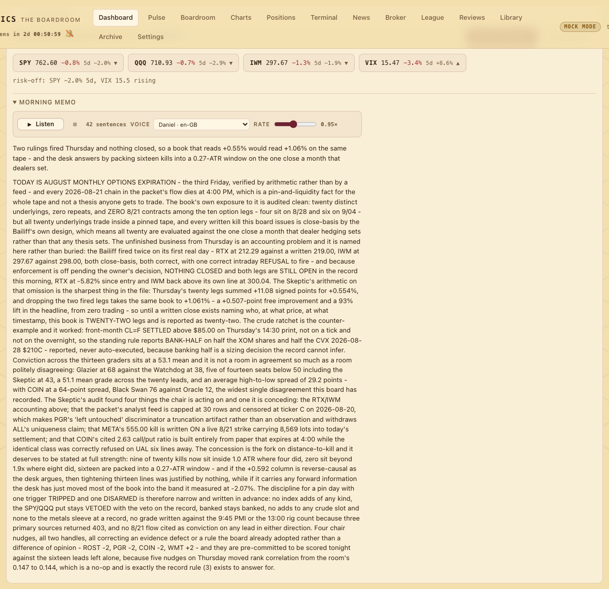

Session · 7:00 AM ET · weekdays
The Morning Briefing
How the 7:00 AM run turns a forty-name scan into ten option leads and ten stock leads under the mandate you set — day trade, swing, long-term or mix — with a memo, live levels, a time horizon and a read-across on every lead, the day's house rules, and your own evidence in front of the board.
What the briefing is#
The Morning Briefing is the first of the day's weekday sessions and the one every other session is measured against. At 7:00 AM ET (hour and minute are editable under Settings) the scheduler calls pipeline.run_morning(): it collects the overnight packet, builds about forty candidate trades, convenes the board to grade them for the mandate you set — day trade, swing, long-term or a mix (below) — and writes a ranked run to the database — ten option leads, each with one selected contract, and ten stock leads — plus the Executive's morning memo, whose first line names that mandate. You can start the same run by hand with Run briefing now on the dashboard. The pipeline refuses to double-run a day that already completed unless forced (the button forces), and a lock keeps two runs from overlapping.
Everything on this page is what the code does at round 25. Where a step behaves differently without an API key, it says so.
The pipeline, stage by stage#
pipeline.py and board.py run it. Every collector and every side effect is guarded; a broken source degrades, it never kills the run. Round 24 adds three inputs and outputs without a new stage: the USER EVIDENCE block on every prompt, the horizon on every lead, and the coupling attached after persist. Round 25 adds the mandate, also without a new stage: a MANDATE section on every prompt, a DTE window on contract selection, and an on-mandate rule in the slate.The progress chip on the dashboard names the stages in the order they run: outcomes, market, options, news, gov, cycles, grading, saving.
- Outcomes and retraining first. Before any collector runs, the pipeline records realized 1-day and 5-day returns for past leads whose window has closed and retrains the small outcome model (an sklearn
MLPRegressor(32, 16)) once at least 25 realized rows exist. Both are best-effort: a failure is logged and the briefing goes on. - Collectors. Market context (SPY, QQQ, IWM, VIX and a regime line); the options-volume scan over the 503-ticker universe, which ranks names by volume spiking over open interest and keeps the top 40 (
CANDIDATE_POOL); US and world RSS headlines; congressional trade disclosures (Quiver Quantitative with a key, degraded to "no signal" without); the FFT cycle decomposition of SPY plus any Curry forecasts you posted in Settings; then per-candidate chart technicals (Fibonacci retracements of the recent swing, clustered support/resistance, 50d/200d posture) and value stats (P/E, P/B, dividend yield, market cap). - Candidates. Each of the forty gets a one-line thesis ("Call volume 3.2x OI, +4.1% 5d, riding the up-trend"), its eleven-number feature vector, up to three matched headlines (falling back to the morning's top three), and its congressional summary.
- What the Executive will see. The outcome model predicts a 5-day return per candidate (grade slots default to 50 at this point — no grades exist yet), per-member calibration (sample size, hit rate, grade-to-return correlation) is loaded, and so are the current Pyramid standings.
- Thirteen graders. One call per grading member, each grading every candidate: a 0–100 grade, a bull/bear/neutral stance, a comment and up to three key risks. Each seat sees only its slice of the packet — Flow gets contract volumes, the two desks get headlines, the Watchdog gets disclosures, the Chartist and Dagger get technicals, Graham and the Oracle get value stats, the Timekeeper gets cycles — plus its five most recent journal lessons and its Pyramid rank line — and, when you have put documents in the Evidence locker, the USER EVIDENCE section (below). Since round 25 every grader prompt also carries the MANDATE section: the owner's trading style for this run, its expected hold, and the instruction to grade every candidate for that mandate — a thesis that needs a longer or shorter hold than the mandate allows is graded down for fit, with "off-mandate" in the comment (below).
- The Skeptic. Sees every member's grades and comments and grades how well each thesis survives attack; the comment is the single strongest argument against it. The Skeptic's prompt carries the MANDATE section too — a thesis that only works on a hold the mandate does not allow is an attack surface.
- The Executive. Sees everything plus calibration, the model's predictions and the full Pyramid standings, is told to weight the leader's grades noticeably more and to name the leader in the memo, and returns a final grade, a two-to-three-sentence summary and — since round 24 — a time horizon per candidate (class, expected sessions, one-line basis; below), plus the morning memo. The Executive's prompt carries the USER EVIDENCE section and the MANDATE section: the Top 20 must fit the mandate — every ranked lead's
horizon_classmust be one of the mandate's allowed classes (under Mix, every class is used and the book is spread: at least 3 intraday, 8 swing, 4 position / long-term when the candidates allow, with the split stated in the memo) — and the memo's first line names the mandate. If the Executive call fails, the final grade falls back to the plain board average, the summary says so, and the horizon is estimated from the numbers. - The slate. Candidates are walked by final grade; each ticker gets at most one lead. If
pick_contractfinds a contract inside the mandate's DTE window and an option slot is open, the candidate becomes an option lead; otherwise it takes a stock slot; the walk stops when both books hold ten — and when the option book cannot be filled with contracts inside the window, a second pass hands the still-open option slots to the best remaining on-mandate candidates as shares (counted asshares_in_option_slots). Under a fixed mandate (Day trade, Swing, Long-term) leads whose final horizon class is off-mandate are dropped before the ten-plus-ten is filled, and only if fewer than twenty remain are the best off-mandate leads admitted, each tagged "off-mandate" at the end of its executive summary; under Mix the twenty are filled by grade, then the spread quotas are enforced when enough candidates graded 50 or better exist — the best lead of each under-represented class is swapped in and every swap is logged. The resulting class counts are stored as the run'sbook_split. Once the slate is composed it is re-sorted by final grade — off-mandate fallbacks last — so global rank 1–20 is in final-grade order whichever pass filled a slot. - Persist, then the side effects. The run, its leads, every grade and the memo are written — with the mandate the run was generated under (
mandate: style, label, hold,book_split) in the run's stored context, which is what the dashboard's "Generated under …" reads. Then — each guarded so it can never touch the committed briefing — the broker bot stages the Executive's top five (final grade at least 60) for your review, never submitting anything (see Broker), and the Paper League opens each seat's paper positions at that day's open. - Read-across. After grading,
attach_coupling(run_id)computes each of the twenty leads' coupling — betas and correlations to SPY, QQQ, IWM, the sector ETF and its closest sector peers over 90 sessions — and the board's read-across paragraph, and stores both on the lead (features_json→coupling,read_across). It is idempotent and guarded like every side effect; a lead it cannot couple simply has no table.
How a contract is chosen#
From the candidate's notable contracts: the type must match the direction (call for long, put for short); the expiry must fall inside the mandate's DTE window — pick_contract(candidate, min_dte, max_dte) considers only contracts with min_dte ≤ DTE ≤ max_dte: Day trade 0–5 days, Swing 6–30, Long-term 45–180, and under Mix the window of the lead's own horizon class (intraday 0–5, swing 6–30, position / long-term 45–180; a lead with no usable class gets the swing window); with no window given the old floor still applies — at least MIN_OPTION_DTE = 6 calendar days, so the leg survives a weekend hold; last price above $0.05. Among the contracts that pass, highest volume wins (not the nearest expiry), ties broken by the strike closest to 3% above spot for longs and 3% below for shorts. The contract is labelled like GLD 2026-08-28 $405C and carries its days to expiry. A candidate with no pickable contract can still be a stock lead — and under Day trade, a name with no 0–5-day chain available stays a stock lead, with a note, rather than being handed a 30-day contract in silence.
The mandate: day trade, swing, long-term or mix#
Since round 25 the briefing is generated for a style of trading you choose. The setting is trading_style — one of intraday, swing, long_term, mix, labelled Day trade · Swing · Long-term · Mix, default Mix — set with the mandate knob in the dashboard header or on the Settings page. The board calls it the mandate, and it is an instruction to a research committee about the kind of book to write — never an order, never a size, never an execution. Each value is a row of config.STYLES:
| Mandate | Expected hold | Allowed horizon classes | Option DTE window | In the memo's first line |
|---|---|---|---|---|
Day trade intraday | same session | intraday | 0–5 days | Mandate: Day trade (same session) |
Swing swing | 2–10 sessions | swing; intraday tolerated | 6–30 days | Mandate: Swing (2–10 sessions) |
Long-term long_term | weeks to months | position, long_term | 45–180 days | Mandate: Long-term (weeks to months) |
Mix mix (default) | any | all four, spread: ≥ 3 intraday, ≥ 8 swing, ≥ 4 position / long-term when the candidates allow | per lead, from its class: 0–5 / 6–30 / 45–180 | Mandate: Mix (any) — and the split |
The pipeline reads the key with db.get_setting("trading_style") when the run starts — at run time, never cached at import, so a change at 6:59 shapes the 7:00 briefing — and stores it in the run's context as mandate (trading_style, label, hold; book_split is added after selection). The mandate then acts in three places — and deliberately not in a fourth:
- Grading for fit. Every grader prompt, the Skeptic's and the Executive's carry a MANDATE section: "The owner's trading style for this run is Swing — expected hold 2–10 sessions. Grade every candidate for THIS mandate: a thesis that needs a longer (or shorter) hold than the mandate allows is graded down for fit (note 'off-mandate' in the comment); the Executive's Top 20 must fit it:
horizon_classmust be one of swing for every ranked lead (Mix: use every class and SPREAD the book — aim for ≥ 3 intraday, ≥ 8 swing, ≥ 4 position / long-term when candidates allow — and say the split in the memo); the memo's first line names the mandate." A good thesis on the wrong clock is not a good lead for this owner today; the board is told so in every seat's prompt, and the memo opens by saying which clock it was working to. - Contract windows.
pick_contractis handed the mandate's DTE window (above); a Day-trade lead with no 0–5-day chain stays a stock lead with a note. The horizon rule from round 24 still holds — an option lead's horizon never exceeds DTE − 1 — and under a fixed mandate_finalize_horizonalso clamps the class to the mandate's allowed set, with "clamped to mandate" noted in the basis, so a Swing book cannot carry a lead whose own horizon says "position". The levels are not. Stop / Target on every lead remain the house ATR bracket for your risk profile (one implementation,pulse.rl.exit_zone, shared by the briefing PDF, the dashboard and the Pulse) under every mandate — they are not sized to the mandate's hold. So a Day-trade share lead reads intraday · today while its 2.5×ATR bracket would, at the house pace, take about three sessions to reach; the basis says so — "[clamped to mandate: Day trade — was swing ≈3 sessions; stop/target stay the house ATR bracket, not sized to the mandate]" — and the reader treats the bracket as the house invalidation / target, the mandate as the clock. - The 10 + 10 split. Under a fixed mandate the slate drops off-mandate leads before filling the ten option and ten stock slots (an option slot takes a lead only when a contract exists inside the mandate's DTE window; option slots still empty after that go to the best remaining on-mandate leads as shares, counted as
shares_in_option_slots); only when fewer than twenty on-mandate candidates remain are the best off-mandate leads admitted, each tagged "off-mandate" at the end of its executive summary — and on the dashboard their horizon chip goes muted. Under Mix the twenty are filled by grade and then the spread quotas are enforced when enough candidates graded 50 or better exist: the best lead of each under-represented class is swapped in, every swap is logged, and the final class counts are recorded asbook_split. - The scan is unchanged. The candidate scan takes no style hint: it ranks the same names by the same score under every mandate. (The contract allowed a small multiplier — today's volume spike for Day trade, 45–180-day open interest for Long-term — but a long-dated contract needs a different chain pull, not a nudge on the score, so it was skipped and said so.) The mandate does its work at grading and selection; under Long-term a book whose scan found no 45–180-day contract fills its option slots with share leads, recorded as
shares_in_option_slotsinbook_split.
Mock mode. The mock board cannot read a prompt, so _grade_leads_mock applies a style_fit pass after the mock grades: each candidate's horizon class is estimated the round-24 way (horizon_estimate — the option's DTE hint, or the ATR distance to the target) and the final grade is adjusted — matched class +3, tolerated class 0, off-mandate −10 and capped at 55; under Mix no grade moves and the spread is enforced at selection instead. The mock memo's first line is "Mandate: Swing (2–10 sessions)", so the dashboard shows the mandate was read even with no key. The same fixed-mandate behaviour is what the acceptance run checks: Day trade → all twenty leads intraday, options at five days or less or stock; Long-term → position / long-term with 45–180-day contracts; Mix → quotas met when possible and book_split recorded.
Where it shows: the briefing header's "Generated under label" (from the run, with a muted "next run: …" when the knob has since moved), the off-mandate horizon chip and the "· mandate: label" suffix on the overlay's Expected-hold row, the evening header's "Mandate: label" — all on the Dashboard page. The owner's manual live-session briefing obeys the same key: it reads trading_style, states it in the memo's first line, fills the horizon accordingly and picks contracts in the same windows (BRIEFING-SPEC.md § Mandate). The vocabulary — mandate, trading style — and the FAQ What does Mix do? are in the reference.
What a lead card shows#

Each card on the Options desk and Stock desk panels carries, top to bottom:
- the rank, a LONG / SHORT badge, the final grade as a number with a thin grade bar, and — since round 24 — the horizon chip beside the stance:
SWING · ≈5 sessions, coloured by class (intraday amber, swing accent, position green, long-term muted) — muted and titled off-mandate when the class falls outside the mandate the run was generated under, never under Mix; - a SPOTLIGHT chip beside the grade whenever the final grade is 60 or better — see below;
- the ticker, and on option cards the contract line — label, last premium and days to expiry;
- the board range rail: a muted 0–100 track, a band from the room's lowest grade to its highest and a pin at the final grade, captioned "board range 47–76";
- the thesis line and the stat row — VOL (option volume against open interest), C/P (call/put volume ratio), 5D (five-day price change), and a small
β 1.3 · XLKtag once the lead's coupling exists; - the levels strip — Entry, Now with the signed % from entry, Stop, Target, and on option cards Prem, the contract's live mark;
- realized 1d / 5d outcomes once they exist; a TAKE / ✓ TAKEN chip (see Positions & trades); and, once the 9:15 check has run, a corner chip with the Pre-Open Check's per-lead action — EXIT, TRIM, HOLD, UPGRADE or WATCH.
Click a card and the lead opens in an overlay: instrument and direction badges, the levels strip with the Expected hold row under it ("swing · ≈5 sessions (3–7) — basis", with "· mandate: label" appended when the lead is off-mandate), the selected-contract row for options (label, last, volume, open interest, DTE), the snapshot grid, the Executive's summary, the Read-across section (the coupling table, the Watch-also chips and the board's paragraph), the consensus strip, then one row per grading member — emoji, name, stance badge, grade chip, comment and key-risk tags — the Skeptic's rebuttal, a technicals panel and the matched headlines. The card and overlay anatomy, part by part, is on the Dashboard page.
Entry, Now, Stop, Target, ATR#
The levels strip is live, not a render-time snapshot. The dashboard asks GET /api/levels?run_id=, which recomputes every lead's Entry (the briefing price), Now (the live print and the direction-signed % from entry), Stop and Target, ATR(14), and — for options — the contract's premium mark from the live chain. The payload is cached in-process for about 45 seconds, so a repaint or a second window never re-hammers the data source; a ticker that fails degrades to a dash. Since round 24 the same payload carries each lead's horizon object — from the lead row, or estimated on the fly when an older run has none — so the chip and the Expected-hold row render on every run, past or present.
bablytics.pulse.rl.exit_zone with the ATR multiples in pulse.goals.EXIT_ZONE_ATR, anchored on the entry and signed by direction — the same call the briefing document and the Pulse make, so three surfaces can never print different stops for one position. It is not the written invalidation: the invalidation is the thesis kill price the board commits to in prose; the zone is a mechanical bracket. For option leads Entry, Now, Stop and Target describe the underlying; Prem is the contract's own price. The strip's tooltip carries ATR(14) and this caveat.Board range and the consensus strip#
Every lead in the run payload carries grade_stats — min, max, mean, count and spread over the grades — from one SQL aggregate per run. On the card that is the range rail. In the expanded lead it becomes the consensus strip: a 0–100 axis with each grading seat's emoji placed at its own grade, the Skeptic included, and the final-grade pin on the same axis. Ties are the norm (half the room can land on 55), so colliding emoji stack into vertical lanes with a stem down to their true value — nobody is nudged off their number and nobody is dropped. Each emoji is a real link with an aria-label ("The Glazier graded 78 — jump to their note"); clicking scrolls to that seat's comment and highlights it, honoring prefers-reduced-motion. Hovering shows the name and grade.
The spotlight on a lead above 60#
When the Executive signs a lead at 60 or better, that lead gets more than a card: after the run has persisted, a pipeline hook writes a Spotlight for it — a full strategy profile with the setup and the dated catalyst, what the options market is pricing against what the name has actually done on its last ten prints, a table of structures priced off the chain that was really pulled, and the nine conditions: intraday · swing · long-term against conservative · moderate · aggressive, with a named instrument or an honest "no position" in every cell.
When it fires. On every completed morning run, for every lead at or above spotlight_min_grade (default 60), in one pass at the end of the run — never during grading, so a failed spotlight can never damage a briefing. It fires in mock mode too: the chain, the levels and the earnings history are market data, not model calls. You can also ask for one on demand with POST /api/spotlight/<lead_id>/generate, including for a lead that has since fallen below the line, and a re-run replaces that lead's spotlight rather than stacking a second copy.
Sixty is the same sixty. spotlight_min_grade defaults to the number the Fund admits on, fund_min_grade — so a lead that walks into the Fund is the same lead that gets written up, off the same grade, on the same morning. They are separate settings if you want to move one, but out of the box "above sixty" means one thing in this app.
Where the badge shows. Beside the grade on the lead card (titled "graded above 60 — a full strategy profile exists", opening #/spotlight/<lead_id>), on the same cards in the Archive, in the Fund's holdings table, and in the briefing PDF as the word SPOTLIGHT after the grade in that lead's block. A Spotlights strip on the dashboard lists the day's spotlighted names. The badge opens a document and does nothing else — the spotlight package has no order path of any kind.
The time horizon on every lead#
Since round 24 a lead says not only where it is right (target) and wrong (stop) but how long it should take. Every lead carries four stored fields — horizon_class, horizon_days, horizon_window, horizon_basis — and the run payload exposes them as "horizon": {"class", "days", "window", "basis"}:
- class
- One of
intraday,swing,position,long_term. - days
- The expected number of sessions to reach the target, as a number; 0.5 means the same day.
- window
- The human string — "today", "2–5 sessions", "3–8 weeks", or the estimator's "≈N sessions" with a ±40% band.
- basis
- One sentence on why: the option's DTE, the ATR-per-day distance to the target, a catalyst date.
AI mode. The Executive's schema gains three required fields per lead — horizon_class, horizon_days, horizon_basis (160 characters at most) — and the prompt says: state for every lead how long the owner should expect to hold it to reach the target — class, expected sessions, one-line basis; options must respect their DTE (never longer than DTE − 1 sessions); be honest — a 60-day thesis is a position, not a swing. Validation in _finalize keeps the class in the enum, the days positive, and clamps an option lead's days to DTE − 1 with a note appended to the basis.
Mock mode and fallback. bablytics/boardroom/horizon_estimate.py — estimate(lead, atr, dte) — fills the horizon from the numbers whenever the board did not state one: for options, DTE ≤ 2 → intraday (0.5–1 session), DTE ≤ 15 → swing at min(DTE − 1, max(2, round(DTE × 0.6))) sessions, longer → position; for stocks, the distance from entry to target in ATRs divided by 0.8 ATR per session, clamped to 1–60 sessions — ≤ 1 intraday, ≤ 10 swing, ≤ 40 position, beyond that long-term — with the basis templated from those numbers; when the target or the ATR is missing, swing, 5 sessions, "default (no levels)". The same estimator backfills older runs through /api/levels, labelled estimated, and the owner's manual live-session briefings fill the same object (see BRIEFING-SPEC.md § Time horizon). A window_text(days) helper keeps the UI's wording identical everywhere.
Where it shows: the card chip, the overlay's Expected-hold row, the Pulse book card's "held 3 of ≈5". The Evening Court does not yet score it — comparing the stated horizon with the realised time-to-target is a queued item once enough leads have closed.
Read-across: what moves with each lead#
Also since round 24, every lead gets a coupling record and a read-across paragraph. The numbers come from bablytics/collectors/coupling.py — coupling(ticker) — on one year of yfinance daily closes with 90-session windows: beta and correlation to SPY, QQQ and IWM; beta and correlation to the lead's sector ETF (config.SECTOR_ETF: Information Technology → XLK, Health Care → XLV, Financials → XLF, Consumer Discretionary → XLY, Communication Services → XLC, Industrials → XLI, Consumer Staples → XLP, Energy → XLE, Utilities → XLU, Real Estate → XLRE, Materials → XLB); up to six peers — the most correlated names in the same sector, computed over at most forty sector members; an implied table — "if the lead moves +1%, expect …" for SPY, the sector ETF and the top five peers, each symbol's beta on the lead times one percent; a watch_also list (top three peers plus the sector ETF); and a one-sentence regime note from the numbers ("moves with the tape: beta 1.3 to SPY, 0.9 to XLK; tightest peers MSFT/NVDA"). Betas are ordinary least squares on aligned daily returns; a pair with fewer than 60 overlapping sessions is null, not guessed. Results are cached per day under data/cache/coupling-<date>.json; failures are not cached.
The paragraph comes from bablytics/boardroom/readacross.py — read_across(leads, coupling_by_ticker, mock): in AI mode one structured call for the whole book asks the Executive, in persona, for two or three sentences per lead — what a move in this name usually drags with it, what a confirmed move would say about the market and the economy ("if this goes up, what else happens"), and who to watch — plus a one-line macro read; in mock mode both are templated from the numbers and the sector. attach_coupling(run_id) does the whole thing for a run and is idempotent, which is how older runs are backfilled. The overlay renders it as the Read-across section, always under the footnote "90-session daily returns; statistical coupling, not causation".
User evidence: what you put in front of the board#
Documents you drop into the Evidence locker and flag for Morning reach the board as a USER EVIDENCE section — built once per run by pipeline.py (evidence_block("morning"), capped at 12 000 characters) and threaded into board.py, where it is appended to every grader prompt and to the Executive's prompt. The heading tells the seats the owner uploaded these, to weigh them explicitly and to cite a document by name when it changes a grade; each entry is the filename, kind and date, your note, and the extracted text (PDF and text kinds; audio and images carry the note only). Only active, unexpired documents are included; with nothing on file the section is absent. In mock mode no grade moves, but the mock memo carries "Owner evidence on file: n documents (names)" so the dashboard shows the locker was read. The owner's manual live sessions can pull the same block with evidence_for_packet() (see BRIEFING-SPEC.md § User evidence). What leaves the machine, and only in AI mode, is on Data & privacy.
The memo and Listen#

The memo sits in the top strip with the run date and status, the index chips (price, 1d %, 5d % and a trend arrow for SPY, QQQ, IWM and VIX), the regime line, the Run and Download PDF controls, and the memo itself in a collapsible panel that ships open. On an automated run the memo is the Executive's morning_memo; in mock mode it is a deterministic sentence that names itself as mock output; on a day the board sat live, the memo stored for that run by the day folder's persist script (not by the app) is the briefing's headline followed by its executive summary.
The Archive reads the database, not the day folder. The Bailiff parses each lead's stored invalidation text (leads.features_json); only its 14:35 ratchet check reads the day's briefing.json rules_today from data/boardroom/<date>/. The rest of that live-board document — the pre-market tape, a today-watch timeline, per-member outlooks with convictions, the Skeptic's filed challenges, the rules of the day and the written invalidations — is day-folder output you can open as files; it is not an app view.
Listen. The memo is rendered sentence by sentence and can be read aloud by the browser's own speechSynthesis through web/speech.js — no key, no cost, no upload. The control offers play/pause and stop, a "3 of 11" sentence counter, the name of the voice in use with a picker that ranks known male voices first and says plainly when no male voice exists on the machine, and a rate slider from 0.7× to 1.3× (default 0.95, persisted). The sentence being spoken is highlighted and scrolled into view. Before speaking, a normaliser spells tickers letter by letter, reads $187.9B and -8.2% as words, and turns META 2026-08-21 $535P into "META, August twenty-first, five hundred thirty-five put"; a test corpus of real memo sentences ships with the module. Speech stops on every route change, logout and repaint.
The house rules#
These rules bind the owner's live-board briefing — BRIEFING-SPEC.md and the day-folder artifacts under data/boardroom/<date>/; the in-app pipeline (mock or AI) does not write invalidations or invalidation_trigger objects yet, and the leads table has no such column. The board's standing rulings live in BRIEFING-SPEC.md, and every live briefing restates the ones that bind that morning under "rules today". They are instructions to the desk, not switches in the pipeline — and where the code does not enforce one, the document is required to say so rather than imply automation.
BRIEFING-SPEC.md § Time horizon).trading_style at run time and named in the memo's first line. Every seat grades for fit; every ranked lead's horizon class is one the mandate allows (Mix: every class, and the book spread ≥ 3 / ≥ 8 / ≥ 4 with the split stated); contracts are picked inside the mandate's DTE window; a lead admitted off-mandate says so (BRIEFING-SPEC.md § Mandate).BRIEFING-SPEC.md § User evidence).invalidation_trigger (ticker, below/above, a price, a close/intraday/settle basis, the source text, explicit/inferred confidence) alongside the prose. Conditions no machine can watch go in unenforceable, never dropped.closed record — ticker, instrument, close price, the branch that fired — not prose.The PDF#
Read PDF — the report, rendered#
Read PDF sits beside Download PDF and opens the same report inside the app, in the platform's own PDF viewer, at a size worth reading. It is a separate route rather than a flag on the export for a concrete reason: the download is encrypted, and an encrypted PDF cannot be rendered by any viewer. Reading a report and exporting one are genuinely different operations, so they are two buttons and two endpoints — GET /api/reports/morning/{run_id}/view streams the PDF unencrypted and inline, behind the same session cookie as every other route. Nothing is written to disk, so there is no file to encrypt against.
<object> fallback will not catch. So the reader probes the frame after it settles and replaces anything that produced no viewer with a plain explanation and two working ways out — open it in a browser, or download it. A blank rectangle is never the answer.Download PDF in the top strip asks for a password (at least four characters) and returns bablytics-briefing-<date>.pdf: a light-paper document with honey rules and maroon headings — the market table, the memo, an Options desk table (rank, ticker, direction, grade, contract, thesis), a Stock book table (price and 5D added), then a board transcript per lead with every seat's grade, stance and comment. A lead graded 60 or better carries the word SPOTLIGHT after its grade in that block, pointing at its own document (Bablytics-Spotlight-<TICKER>-<date>.pdf). The file is encrypted with pypdf: AES-256 when the cryptography package is installed, RC4 otherwise. The dialog is honest about what that buys — it deters casual sharing; anyone with the password can open it.
Mock mode and AI mode#
Without an ANTHROPIC_API_KEY (or with BABLYTICS_MOCK=1) every seat grades from deterministic rules in its own spirit: Flow keys off volume over open interest and call/put skew, Dagger off five-day momentum and RSI, Sam punishes counter-trend entries, the Glazier reads yesterday's gap against volume, the Skeptic inverts the room's mean with jitter, and the Executive takes a weighted mean in which Flow, Dagger and Sam count 1.5× and today's Pyramid leader a further 1.5×. The output shape is identical, the UI shows a "mock mode" pill, and if even the market scan fails offline a synthetic candidate list keeps the demo running end to end. With a key, each grader, the Skeptic and the Executive are one JSON-schema-constrained model call apiece — fifteen calls per run, plus since round 24 one more for the book's read-across — and a failed call falls back to the fills described above. The round-24 additions keep the same discipline: in mock mode the horizon comes from horizon_estimate, the read-across is templated from the coupling numbers, and the evidence block changes no grade but is named in the memo. Round 25's mandate follows suit: in AI mode it is a MANDATE section in every prompt and a fit requirement on the Executive's Top 20; in mock mode it is the style_fit adjustment (+3 / 0 / −10 capped at 55; Mix untouched) and a selection loop that drops off-mandate leads or enforces the Mix spread — and the mock memo opens "Mandate: label (hold)".
What the run feeds#
- The Spotlight, immediately — every lead the Executive signed at 60 or better is written up as a full strategy profile, with the nine conditions and a structure table priced off the real chain.
- The Pre-Open Check at 9:15 — the full committee revalidates these twenty leads against futures, pre-market prints and the OI-conversion audit; its per-lead actions land on the cards as corner chips.
- The Midday Check-In at 12:30 — every seat re-reads the paper positions it opened on these leads and files hold or close.
- The Pulse every half hour and the Bailiff every fifteen minutes — one reads the book's levels, the other prices the written invalidations.
- The Evening Court at 19:00 — the leads are scored against the close and every seat journals; the lessons ride tomorrow's prompts.
API#
- GET /api/runs/latest · GET /api/runs/{id}
- The assembled run: run row (date, status, market context — since round 25 including the
mandateit was generated under:trading_style,label,hold,book_split— and memo) and leads with grades (member, name, emoji, grade, stance, comment, key risks), the Skeptic's grade,grade_stats, instrument and contract, outcomes and thetakenflag. - POST /api/runs/trigger · GET /api/runs/progress
- Start a forced run in a background thread; poll the stage chip.
- GET /api/levels?run_id=
- Live Entry / Now / Stop / Target / ATR(14) and the option premium per lead, plus each lead's
horizonobject (stored, or estimated and labelled so); 45-second in-process cache,X-Levels-Cache: hit|missheader. - GET /api/coupling/{ticker} · GET /api/coupling/lead/{lead_id}
- The coupling dict for a ticker, computed on demand and cached per day; or
{"coupling", "read_across"}for a stored lead, with a fallback compute and mock text when the run predates the feature. - GET /api/evidence · POST · PATCH · DELETE · /preview?purpose=morning
- The Evidence locker;
previewreturns the exact USER EVIDENCE block the morning prompts will carry. Full shapes on The Evidence Locker. - GET /api/reports/morning/{run_id}/view
- The briefing PDF, unencrypted and
inline, for the in-app reader. Same for/api/reports/evening/{run_id}/view. - POST /api/reports/morning/{run_id}
- Body
{"password": "…"}(4+ chars) → the encrypted briefing PDF. - Settings
run_hour/run_minute(defaults 7:00 ET) viaGET/POST /api/settings; saving reschedules the job at once.trading_style(the mandate:intraday/swing/long_term/mix, defaultmix) through the same endpoints —GETalso returnstrading_style_label— or through the knob's ownPUT / POST /api/settings/mandate{"trading_style"}; read at the next run, never re-grading the last.